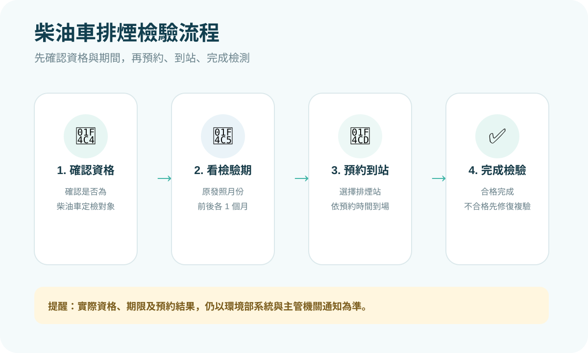
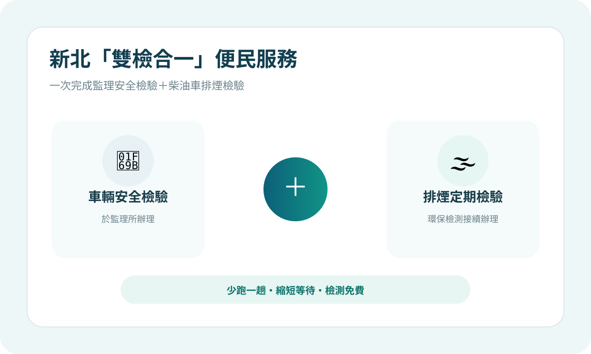

檢驗對象
在中華民國設籍，曾由主管機關依定期檢驗、不定期檢驗或通知到檢等方式檢驗，結果不符合排放標準，之後已修復複驗合格或完成改善的柴油及替代清潔燃料引擎汽車。
ESSENTIALS
先確認自己是不是「定檢對象」，不要把定期檢驗和臨時通知到檢混在一起。
在中華民國設籍，曾由主管機關依定期檢驗、不定期檢驗或通知到檢等方式檢驗，結果不符合排放標準，之後已修復複驗合格或完成改善的柴油及替代清潔燃料引擎汽車。
自「修復複驗合格或完成改善」的次年起，連續 2 年，每年實施排放空氣污染物定期檢驗 1 次。
在應定檢年度，依行車執照上的「原發照月份」，可在前 1 個月、當月及後 1 個月辦理，共 3 個月的檢驗期間。
如果行照原發照月份是 7 月，原則上可在 6 月 1 日～8 月 31 日完成當年度定檢。
DATE CHECKER
選擇行照上的原發照月份，就能快速看到可辦理的月份範圍。
HOW TO INSPECT
從確認資格到完成檢驗，依序做就不容易漏掉。


BEFORE INSPECTION
NEW TAIPEI SERVICE
監理安全檢驗與柴油車排煙定檢接續辦理，減少車主往返時間。

服務場次可能因政策、假日或現場狀況調整，出發前請以新北市環保局或環境部最新公告為準。
E-NOTICE
環境部已推出 Email 電子化定檢提醒，汽車、機車與柴油車都可以使用。
完成 Email 驗證與綁定後，系統可在定檢區間主動寄送提醒；官方公告載明每位使用者可輸入最多 10 筆車號。
IF FAILED
不合格不是結束，重點是要在規定期限內修復並完成複驗。
依檢驗結果檢查引擎、燃油及排氣系統。
自檢驗日起 1 個月內修復並申請複驗。
完成合格紀錄，才算完成該次定檢。
PENALTIES
以下為環境部柴油車車主定檢專區目前公開的罰鍰範圍。
NOTICE TO INSPECT
收到新北環保局通知單時，請依通知期限處理，不要只看原發照月份。
符合定檢對象者，依行照原發照月份前後 1 個月辦理。
使用中柴油車若經目視判煙、民眾檢舉等方式認定有污染之虞，可被通知在指定期限內到檢。
新北環保局 FAQ 說明，應在原檢測期限前檢附展延申請書與佐證資料申請，展延以 1 次為限，最多 14 日。若車輛已過戶、報廢或失竊，可檢附相關證明辦理銷案。車輛如不在新北，也可在期限內就近至其他縣市環保局排煙檢測站檢測，再將結果回傳。
AIR QUALITY MAINTENANCE ZONE
除了定檢義務，新北部分空氣品質維護區也會檢查柴油車是否具期限內合格排煙紀錄。
SELF MANAGEMENT
定期保養與檢測，不只是為了通過檢驗，也能讓車隊更容易掌握排煙狀況。
新北官方公開資訊載明，1～5 期柴油車經檢測符合標準，可核予 1 年期優級標章。
若僅符合原出廠排放標準，官方公開資訊載明可核予半年期合格標章。
新北官方公開資訊載明，新購 5、6 期車可攜行照與駕照至林口排煙檢測站申辦標章，無須進行排煙檢測。
FAQ
用比較簡單的方式整理車主最常遇到的情況。
不是。現行定檢對象是曾經主管機關檢驗不符合排放標準，之後已修復複驗合格或完成改善的柴油車；自次年起連續 2 年，每年 1 次。
定期檢驗應至各級主管機關指定地點或柴油車底盤動力計排煙檢測站辦理；可利用環境部系統查詢各地站點與預約。
環境部車主定檢專區目前明載柴油車定期檢驗免費。
應儘快修復，並於檢驗日起 1 個月內申請複驗；逾期或期限後複驗仍不合格，可能依規定受罰。
新北環保局 FAQ 說明，可在期限內就近至其他縣市環保局排煙檢測站完成檢測，再將檢測結果回傳新北環保局。
若屬通知到檢案件，應在原期限前提出展延申請並附佐證資料；新北環保局 FAQ 載明展延以 1 次為限，最多 14 日。
OFFICIAL SERVICES
查資格、預約、查檢測資料或最新公告，建議直接使用官方系統。
本頁為網站範本，正式發布前請更新聯絡方式及公告內容。